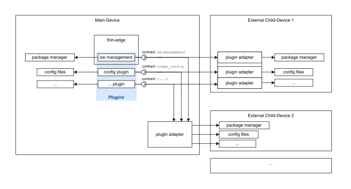

thin-edge Domain Model
The following section introduces the thin-edge domain model.
thin-edge is the glue between the cloud and devices. I.e. it interfaces on the one hand devices (especially resource constrained industrial devices), and connects on the other hand the cloud. The cloud could be some IoT Cloud Platform, such as Cumulocity, Azure or AWS; or an on-premise "IoT system".
thin-edge has been designed with the assumption that the device is represented in the IoT cloud as device twin. The device twin in the IoT cloud is a logical representation of the device. As such, it carries or references Telemetry Data, and stores the state of the device. Here state refers to e.g. Device Management details as installed software versions or configurations.
Telemetry Data
Telemetry data are measurements, events and alarms.
- Measurement:
- has a type name
- carries a time-series of samples
- a sample is a single value or set of values, all taken at a single point in time
- a sequence of samples is a set of samples over a period of time; e.g. voltage and current captured in a fixed interval
- a measurement optionally holds individual units for the values of the samples
- a measurement relates to a source, i.e. a device or a process
- Setpoint, is a single value or set of values
- the values are process variables, used by the Domain Application1;
e.g. the lower limit and the upper limit of a climate control process - the values are visible in the cloud, similar to measurements
- the values can be manipulated from cloud-site or the device-site
- each manipulation is processed asynchronously; i.e. once new values were set, those are used by the Domain Application1 from next control-cycle on
- the values could be a mix of numbers, strings or booleans
- the values are process variables, used by the Domain Application1;
- Event, is a notification that something happened on the device's environment or software system
- has one timestamp
- common triggers for an event can be
- the interpretation of a sensor's value, a domain application's signal or a system's notification
that shall represent an event trigger falls to some custom specific software piece
- whenever that software piece interprets an event trigger, it uses the thin-edge API to send an event notification to thin-edge
- Alarm, similar to events; but in addition:
- the End User (an operator of the system) has to take action to resolve the alarm
- also the custom specific sw component can send a notification to thin-edge to clear an alarm
Device Management
Device Management allows managing and monitoring devices in the field from the cloud. That includes:
- Software Management:
- allows managing the installed software packages on the device, as
- retrieve list and versions of installed packages
- install new or update existing software packages
- remove installed software packages
- software packages are installable units on the device, as e.g.
- packages for a Linux Packages Managers (e.g. for Debian, ...)
- container images (e.g. for Docker)
- simple ZIP files
- custom specific files/packages
- software packages can carry:
- allows managing the installed software packages on the device, as
- Firmware Management:
- allows to update the OS base-image of the device as one (e.g. the Linux distribution)
- a firmware update might dictate a new software list and new configurations
- i.e. software modules previously installed with Software Management might be gone after a firmware update; e.g. when those software modules were installed into the area of the OS base-image
- the actual behaviour of Software Management together with Firmware Management depends on details of the specific deployment and package management of the custom device
- same also applies for Configuration Management together with Firmware Management
- Configuration Management:
- allows viewing and changing configurations on the device, as
- list available configurations
- transfer individual configurations from device to cloud, and vice versa
- a configuration is a text file or a binary file, as e.g.
- allows viewing and changing configurations on the device, as
- Log Management:
- Device Monitoring:
- collects metrics (e.g. cpu, memory and disk metrics) from the device and forward these to the IoT cloud
- allows monitoring the health of devices
- helps troubleshooting when problems with the device are reported
more details see appendix Device Domain
Child-Devices
thin-edge facilitates IoT functionality to the device it is running on, as well as to devices that are connected to that device.
- the device thin-edge is running on is referred as the main-device
- thin-edge on the main-device establishes and manages all communication to the cloud
- all devices connected to the main-device are referred as external child-devices
- each external child-device can be represented in the cloud with its individual device twin
- a unique child-id makes the association between each external child-device and it's device twin
- all telemetry data and device management functionality can appear in the context of the external child-device's individual device twin, or the main-device's device twin
- also containers or processes running on the main-devices can be handled like external child-device; those are referred then as logical child-devices
The figure below illustrates the child-device concept.

Plugins
thin-edge realizes Device Management based on plugins.
- a plugin can be an (external) executable (e.g. as the
c8y-configuration-pluginfor configuration management) or part of a thin-edge built-in software component (e.g. software management intedge-agent) - to realize Device Management functionality, a plugin accesses resources and services of the device, as e.g.
- software management uses the device's package manager
- configuration management reads/writes device's configuration files
- a plugin can facilitate Device Management functionality for the main-device and external child-devices, or even containers on the main-device (e.g. docker containers)
- a plugin runs usually on the main-device
- resources and services (e.g. file system, package manager, ...) of external child-devices or other containers can not accessed directly by the plugin
- the access to those resources and services is established by another software component, referred as plugin adapter
- a plugin adapter can run on the external child-device or inside the container, and provides access via network to the plugin
The figure below illustrates the concept of plugins and plugin adapters.

Plugin Adapter
A plugin adapter is the counterpart of a plugin, that takes the responsibility to access the external child-device's or container's resources and services.
- a plugin adapter can serve one or more plugins
- for access to an external child-device, the plugin adapter can be installed and executed on that external child-device, or on the main-device
- if it runs on the external child-device it can access the resources and services directly
- if it runs on the main-device it can use any (low-level) interfaces the external child-device provides to access those resources
- One main reason to install the plugin adapter on the main-device is, when the external child-device cannot or shall not be altered.
- for access to another container, the plugin adapter can be installed and executed inside that container, where it can access the resources and services directly
Plugin-Identifier and Contract
A plugin defines and implements a specific contract for all interactions with a plugin adapter
- part of the contract could be e.g.:
- the plugin adapter must listen and react to certain requests of the plugin, e.g. on MQTT
- the plugin adapter must provide/consume files to/from the plugin on purpose, e.g. via HTTP
- ...and more...
- a plugin can be flagged with a unique plugin-identifier (e.g.
tedge_config,tedge_softwareor any other unique string for a custom specific plugin)- based on that plugin-identifier a plugin adapter can report and find plugins the child-device intends to contact (e.g. during provisioning phase)
- a plugin and a plugin adapter using the same plugin-identifier can assume to implement the same contract, and to be compatible with each other
Inventory
thin-edge holds and manages an inventory on the main-device, that stores and provides information about the main-device and known child-devices
- information stored per device are
- supported kinds of Device Management capabilities/operations
- supported kinds of Telemetry Data
- optionally any custom-specific meta-information per device
- the inventory is the communication backbone for plugins, external child-devices, the domain application1 and thin-edge it-self
- one can add information to announce capabilities a device supports
- another one can retrieve those information to identify capabilities a device supports
Appendix
Device Overview
thin-edge is designed to facilitate IoT functionality to resource constrained devices. The focus is on industrial OT devices or any other kind of embedded devices. It is not reduced to devices that are capable to install and run thin-edge, but includes also devices that need another (gateway) device aside, that executes thin-edge.
Usual devices are PLCs (Programmable Logic Controllers), IPCs (Industrial PCs) or any kind of SoC-based or Microcontroller-based Embedded System. The figure below shows a simplified conceptual model of such a device.

- The Domain Application is a program, that contains the domain specific process logic.
- On a PLC it's a control application, created by an automation engineer in a domain specific graphical programming language (like "Ladder Diagram" or "Function block diagram")
- Or on a SoC-based or Microcontroller-based system it's an application program, created by an embedded software engineer usually in C/C++
- The OS / Libs / Runtime provide basic functionality to the Domain Application
- Sensors and Actuators enable the device to observe and control physical behaviour on the shopfloor or device's environment.
- can be integrated in the device's hardware, or connected to the device via some Fieldbus (e.g. Modbus, CANopen, PROFINET, EtherCAT, ...) or some Local Interface as USB, UART, SPI, I2C, ...
- can be simple peripherals as a light barrier, or a sensor for temperature or pressure; or complex equipment as robotic arms or even other devices
- Inputs / Outputs are the communication channels between the Domain Application and Sensors and Actuators
- drivers (as part of the OS / Libs / Runtime and/or the Domain Application) do expose all data from Sensors and Actuators to the device as inputs or outputs
- also the Domain Application can expose data as input or output (e.g. own signals or states)